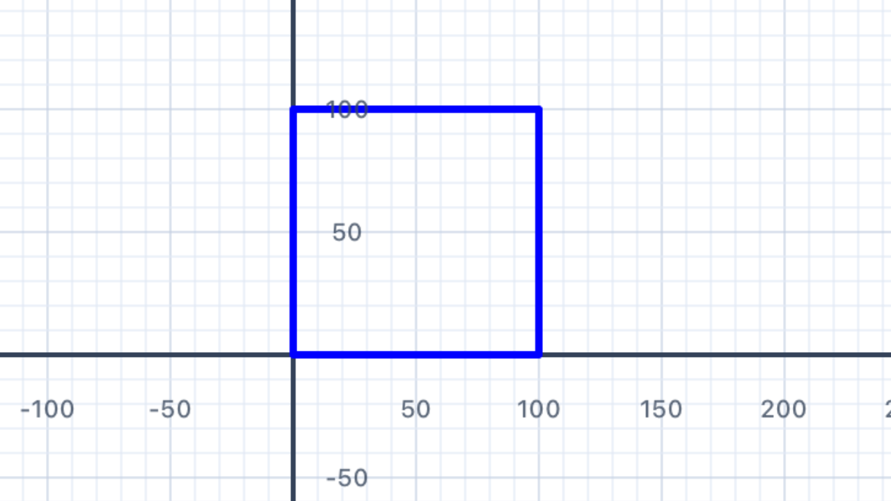
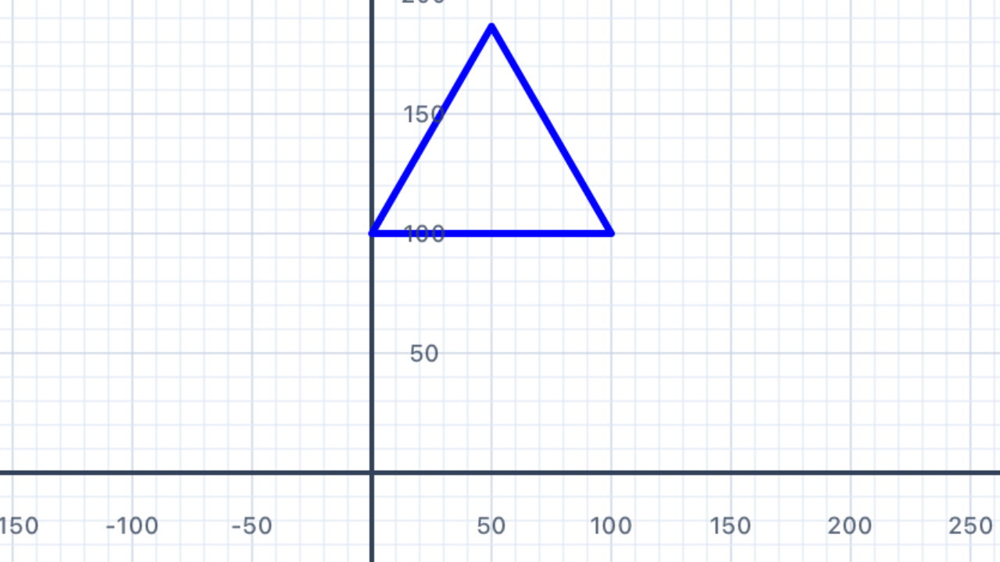
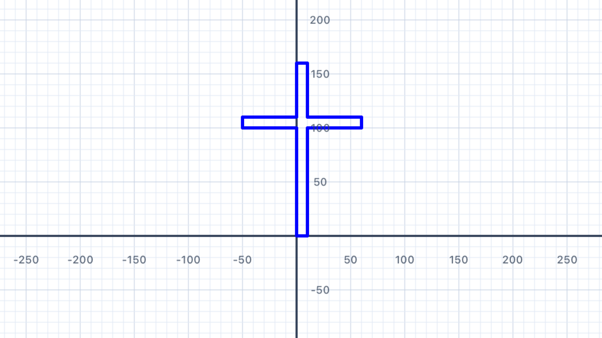
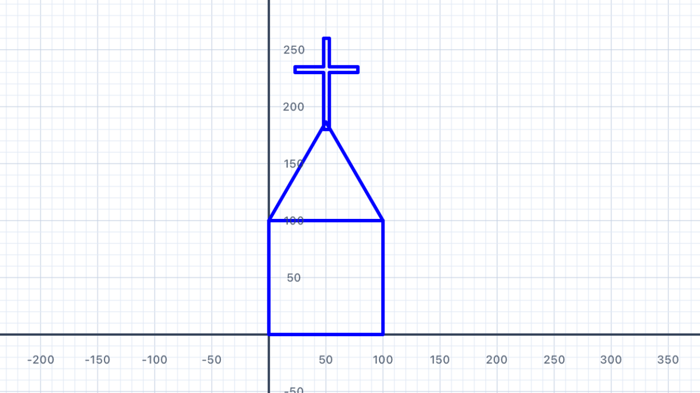

A Square
You have been drawing squares since Chapter 1. This final chapter brings every skill together to build a whole neighbourhood from reusable components — using the same helpers you already built in Chapter 5.
Remember drawRectAt from Section 17 of Chapter 5? You already have a function that draws a filled rectangle at any position on the canvas. A square is just a rectangle with equal width and height — so we already have everything we need to draw squares at any point on the canvas.
import Foundation import UIKit // Filled rectangle at an absolute position — defined in Chapter 5 §17. // Keep this at the top of your playground file. func drawRectAt(at pos: Point, w: Double, h: Double, color: UIColor) { var p = Pen() p.penColor = color p.fillColor = color p.goto(x: pos.x, y: pos.y) for _ in 1...2 { p.addLine(distance: w) p.turn(degrees: 90) p.addLine(distance: h) p.turn(degrees: 90) } addShape(pen: p) }
A square is a rectangle where w == h, so we can write a tiny wrapper:
// drawSquare is just drawRectAt with w == h func drawSquare(at pos: Point, size: Double, color: UIColor) { drawRectAt(at: pos, w: size, h: size, color: color) } // Draw a row of three squares at different positions drawSquare(at: Point(x: -150, y: 0), size: 60, color: .red) drawSquare(at: Point(x: -50, y: 0), size: 60, color: .green) drawSquare(at: Point(x: 50, y: 0), size: 60, color: .blue)
The key pattern for Chapter 6. Every function you write should take anat: Pointparameter (where to draw) and any size/colour parameters it needs. This lets you compose complex scenes by calling manydraw...functions, each at a carefully computed point. No pen state to track, nopenUp/penDownto remember — just "draw this shape at that position".
Why this is easier than the Chapter 5 flag functions. Each of your flag solutions created its own pens inside the function. Chapter 6 keeps that same pattern but composes many shapes into a scene. The secret: every function just needs to know its anchor point (usually the bottom-left corner) and draw everything relative to it. That's why drawRectAt(at: pos, ...) is the workhorse of this chapter.
Throughout this chapter, each building-block function — drawRoof, drawCross, drawChurch, drawHouse, drawFencePost, drawCar — follows this same convention:
- It takes
at pos: Pointas its first parameter posis the bottom-left corner of the shape's bounding box- It takes size/colour parameters after that
- It doesn't move or modify any shared state — each call is independent
This is the same pattern you used for flag functions in Chapter 5. You've already done the hard work — Chapter 6 just uses it to build scenes instead of flags.

| Concept | Connection |
|---|---|
| Functions & Abstraction | A square is the special case of a rectangle where width equals height. Writing drawSquare as a one-line wrapper around drawRectAt is a direct application of function specialisation — and mirrors how a square is defined as a special rectangle in the classification hierarchy of quadrilaterals. |
A Triangle
Every building in our scene needs a roof. Write a function drawRoof(at:base:color:) that draws a filled equilateral triangle — this gives a clean, symmetric roof shape. The triangle sits on top of a wall, with its base running from pos to pos + (base, 0).
In Puerto Rico (Chapter 5 §20) you met the Triangle geometry object and addFilledTriangle. Use the same tools here: compute the three vertices (bottom-left, bottom-right, apex), bundle them into a Triangle, and call addFilledTriangle.
Equilateral triangle height from Puerto Rico. For an equilateral triangle with side lengthbase, the perpendicular height from the base to the apex isbase × √3 / 2 ≈ 0.866 × base. This comes from Pythagoras on a bisected equilateral triangle: half-base isbase/2, hypotenuse isbase, and the height is√(base² − (base/2)²) = base·√3/2.sin(60°) = √3/2is the same constant.
If you walked the triangle's perimeter. Starting at the bottom-left facing right, you'd walkbasealong the bottom edge, turn left 120° at the bottom-right corner (interior angle 60° + turn 120° = 180° straight line if you kept going), walkbaseup the right slope to the apex, turn left 120° at the apex, walkbasedown the left slope, and turn left 120° one last time — a total of 360° of turning, back where you started facing right. Exterior angle =360° / 3 = 120°, exactly the formula from Section 02 of Chapter 5.
// Draw an equilateral triangle "roof" sitting on a base from (pos.x, pos.y) // to (pos.x + base, pos.y). The apex is directly above the midpoint. func drawRoof(at pos: Point, base: Double, color: UIColor) { // 1. Compute the three vertices // 2. Build a Triangle // 3. Call addFilledTriangle(...) // your code here }
import Foundation import UIKit func drawRoof(at pos: Point, base: Double, color: UIColor) { // Equilateral triangle height = base × √3 / 2 let height = base * sqrt(3) / 2 // Three vertices: bottom-left, bottom-right, apex (centred above) let botLeft = pos let botRight = Point(x: pos.x + base, y: pos.y) let apex = Point(x: pos.x + base / 2, y: pos.y + height) let tri = Triangle(a: botLeft, b: botRight, c: apex) addFilledTriangle(tri, fillColor: color, borderColor: color, lineWidth: 1) } // Test: a red roof 100 units wide, bottom-left at the origin drawRoof(at: Point(x: -50, y: 0), base: 100, color: .red)
Why pass the bottom-left corner? By convention in Chapter 6, every shape'sposis its bottom-left corner. This means the shape grows up and to the right frompos. When you compose shapes (putting a roof on top of a house body), the roof'sposbecomes the top-left of the body — just(body.x, body.y + bodyHeight). No pen state to track; no surprises.

| Concept | Connection |
|---|---|
| Geometry — Triangles | The height of an equilateral triangle with side s is s·√3/2, a direct consequence of Pythagoras on the 30-60-90 right triangle you get by bisecting it. This same constant √3/2 = sin(60°) appears in hexagonal tilings, honeycombs, and the Puerto Rico flag's blue canton. |
A Cross
Churches need a cross! Write drawCross(at:size:thickness:color:) that draws a plus-sign cross at a given centre point. This is the same inclusion–exclusion pattern you used for the Swiss flag in Chapter 5 §18 — two perpendicular rectangles overlapping at the centre.
Unlike other Chapter 6 shapes, the cross is positioned by its centre, not its bottom-left corner — that makes it much easier to place at the apex of a roof. The size is the length of each arm (tip-to-tip), and the thickness is how fat each arm is.
Remember the Swiss flag. The Swiss cross is two overlapping rectangles that share a square patch at the centre. Cross area = 2 × (size × thickness) − thickness² (inclusion–exclusion — subtract the double-counted middle). You don't need to compute the area to draw the shape, but understanding the overlap helps you see why the centring formulas work.
Centring a rectangle on a point. To put aw × hrectangle with its centre at(cx, cy), set its bottom-left to(cx − w/2, cy − h/2). This is the key formula for this exercise — you'll use it twice, once for each arm of the cross.
// Draw a filled plus-sign cross centred at `center`. // size = tip-to-tip length of each arm // thickness = how fat each arm is (usually a small fraction of size) func drawCross(at center: Point, size: Double, thickness: Double, color: UIColor) { // 1. Vertical bar: thickness wide, size tall, centred on (cx, cy) // 2. Horizontal bar: size wide, thickness tall, centred on (cx, cy) // Both drawn with drawRectAt — the overlap at the centre is painted twice, no problem. // your code here }
import Foundation import UIKit func drawCross(at center: Point, size: Double, thickness: Double, color: UIColor) { let half = size / 2 let halfT = thickness / 2 // Vertical bar — thickness wide, size tall, centred on (center.x, center.y) drawRectAt( at: Point(x: center.x - halfT, y: center.y - half), w: thickness, h: size, color: color ) // Horizontal bar — size wide, thickness tall, centred on (center.x, center.y) drawRectAt( at: Point(x: center.x - half, y: center.y - halfT), w: size, h: thickness, color: color ) } // Test: a white cross centred at the origin drawCross(at: Point(x: 0, y: 0), size: 60, thickness: 12, color: .white)
Two rectangles, no pen gymnastics. Compare this to how this exercise used to be solved — withpenUp,penDown, four or five turns, and a careful "return the pen to its starting position" epilogue. WithdrawRectAtand a centre-based position, the whole function is just twodrawRectAtcalls. Each call is completely independent; they just happen to overlap at the middle.

| Concept | Connection |
|---|---|
| Geometry — Perpendicular Lines & Inclusion–Exclusion | The two arms of the cross are perpendicular rectangles sharing a square centre. Using inclusion–exclusion, the cross's area is 2 × (size × thickness) − thickness². The (center − half, center − halfT) offset formula is the standard way to centre a w × h rectangle on a point. |
A Church
Now compose your three building-block functions into a complete church. Write drawChurch(at:size:) that draws:
- A square body (colour:
.gray) - A triangular roof sitting on top (colour:
.red) - A small cross at the apex of the roof (colour:
.white)
This is where the at: Point convention pays off: to draw each sub-component you just compute where its anchor point sits relative to the church's anchor point and call the sub-function. No pen state, no navigation — just coordinate arithmetic.
Working out each component's anchor. If the church'sposis the bottom-left corner of the body:
- Body: bottom-left =
pos- Roof: bottom-left sits on top of the body at
(pos.x, pos.y + size)- Cross centre: horizontally at the midpoint
(pos.x + size/2, ...); vertically at the roof's apexy = pos.y + size + size·√3/2, plus a little more if you want the cross to stand above the apex like a spire.
Why this is cleaner than penUp/penDown. When you were tracking pen state, every sub-component required you to "navigate" from where the previous one left you — turn, move, turn, lift pen, turn again. Withat: Point, each sub-component just needs a singlePointargument computed fromposandsize. You can add, remove, or reorder components without touching the others.
func drawChurch(at pos: Point, size: Double) { // 1. Draw the grey body (square at pos) // 2. Draw the red roof on top of the body // 3. Draw the small white cross just above the roof apex // your code here }
import Foundation import UIKit func drawChurch(at pos: Point, size: Double) { // ── 1. Grey body (square) ─────────────────────────── drawSquare(at: pos, size: size, color: .gray) // ── 2. Red roof on top of the body ────────────────── let roofBase = Point(x: pos.x, y: pos.y + size) drawRoof(at: roofBase, base: size, color: .red) // ── 3. Small white cross above the roof apex ──────── // Apex is at (pos.x + size/2, pos.y + size + size·√3/2). // Put the cross's centre a little above the apex so it "stands up". let apexX = pos.x + size / 2 let apexY = pos.y + size + size * sqrt(3) / 2 let crossSize = size * 0.25 drawCross( at: Point(x: apexX, y: apexY + crossSize / 2), size: crossSize, thickness: crossSize * 0.25, color: .white ) } // Test drawChurch(at: Point(x: -40, y: -60), size: 80)
The "anchor arithmetic" pattern. For every sub-component, compute its anchor point as a simple offset frompos:This is the same coordinate arithmetic you did in every Chapter 5 flag function — it's just applied to a more elaborate scene here.
- Body anchor =
pos(no offset)- Roof anchor =
pos + (0, size)(up by body height)- Cross centre =
pos + (size/2, size + size·√3/2)(horizontal midpoint, plus body height, plus roof height)

| Concept | Connection |
|---|---|
| Geometry — Modelling with Shapes | A church is modelled as a composite of three primitive shapes. Each component occupies a specific region — identifying those regions and computing their relative positions using pos + offset is the coordinate-geometry skill that generalises to any scene. |
Row of Churches
Draw a row of five churches, each 10 points larger than the last. The first church should have size: 40, the last size: 80. Leave a gap of 20 points between each church.
Because each call to drawChurch is independent (no pen state to worry about), you just need to compute the x-coordinate of each church's bottom-left corner and call drawChurch(at: Point(x: ..., y: ...), size: ...).
The accumulator pattern. Keep a runningxvariable that starts at your leftmost position and grows each iteration by(size + gap). After drawing a church, advancex += size + gapso the next church starts right after the previous one plus a gap. This is the same pattern you'll use for the fence and the neighbourhood scene.
Arithmetic sequence of sizes. The sizes 40, 50, 60, 70, 80 form an arithmetic progression with first terma = 40and common differenced = 10. The formula for the i-th term (starting from i = 0) isa + i·d = 40 + 10i— the same linear function you see in coordinate geometry and in the general n-th term formula for arithmetic sequences.
Centring the row. The total width of the row is the sum of all five sizes plus four gaps:40 + 50 + 60 + 70 + 80 + 4·20 = 380. To centre the row around the canvas origin, start the first church's bottom-left atx = −380/2 = −190. (Or just set a fixedstartXand move on — precision isn't critical for this exercise.)
let gap: Double = 20 let baseY: Double = -50 var x: Double = -190 // starting x, roughly centred for i in 0...4 { let size = 40.0 + Double(i) * 10 // draw one church then advance x by (size + gap) // your code here }
let gap: Double = 20 let baseY: Double = -50 var x: Double = -190 // starting x, roughly centred for i in 0...4 { let size = 40.0 + Double(i) * 10 drawChurch(at: Point(x: x, y: baseY), size: size) x += size + gap // advance to the start of the next church }
Note on centring (optional). If you want the row perfectly centred regardless of sizes, compute the total width first, then setstartX = -totalWidth / 2. For this exercise a fixed startingx = −190is good enough — the sizes are known in advance.
| Concept | Connection |
|---|---|
| Functions & Sequences | The church sizes form an arithmetic sequence: 40, 50, 60, 70, 80 — first term 40, common difference 10. The i-th term is a + i·d = 40 + 10i. The total width of the row is the sum of the arithmetic series plus the gaps: Σ(40 + 10i) + 4·20 = 300 + 80 = 380. |
A Pretty House
A house is more detailed than a church. Write drawHouse(at:size:) that includes:
- A rectangular body (width =
size, height =size × 0.75) - A triangular roof on top (call
drawRoof) - A rectangular door centred at the bottom (width =
size × 0.25, height =size × 0.4) - Two square windows, one on each side of the door (side =
size × 0.18)
Five components — and with drawRectAt and drawRoof already in your toolbox, each one is a single function call. The only real work is computing each component's anchor point.
Proportional design. Every dimension is a fraction ofsize: body height =0.75 × size, door =0.25 × 0.40of size, window side =0.18 × size. Changingsizescales the entire house uniformly — no single number is "pinned". This is exactly how you scaled the Union Jack canton to half-size for the Australian flag in Chapter 5 §14.
Centring the door. The door is narrower than the body (doorW = 0.25 × sizevs body widthsize). To centre it horizontally, its bottom-leftxshould bepos.x + (size − doorW) / 2. Same(w − shapeW) / 2formula you used for the centred crosses in Switzerland and the Union Jack.
Windows: inset from each side wall. Use a fixed inset from each side — e.g.size × 0.08. The left window's bottom-leftxispos.x + inset. The right window's bottom-left ispos.x + size − inset − winSide(inset from the right, then step back by the window's own width so its right edge lands at the inset).
func drawHouse(at pos: Point, size: Double) { let bodyH = size * 0.75 let doorW = size * 0.25 let doorH = size * 0.4 let winSide = size * 0.18 // 1. Yellow body (rectangle, bottom-left at pos) // 2. Red roof (on top of body) // 3. Brown door (centred horizontally at the bottom) // 4. Left window // 5. Right window // your code here }
import Foundation import UIKit func drawHouse(at pos: Point, size: Double) { let bodyH = size * 0.75 let doorW = size * 0.25 let doorH = size * 0.4 let winSide = size * 0.18 let winInset = size * 0.08 // inset from side walls let winY = pos.y + bodyH * 0.45 // window row y // ── 1. Yellow body ──────────────────────────────────── drawRectAt(at: pos, w: size, h: bodyH, color: .yellow) // ── 2. Red roof on top of body ──────────────────────── drawRoof( at: Point(x: pos.x, y: pos.y + bodyH), base: size, color: .red ) // ── 3. Brown door (centred at bottom of body) ───────── let doorX = pos.x + (size - doorW) / 2 drawRectAt( at: Point(x: doorX, y: pos.y), w: doorW, h: doorH, color: .brown ) // ── 4. Left window ──────────────────────────────────── drawRectAt( at: Point(x: pos.x + winInset, y: winY), w: winSide, h: winSide, color: .cyan ) // ── 5. Right window ─────────────────────────────────── drawRectAt( at: Point(x: pos.x + size - winInset - winSide, y: winY), w: winSide, h: winSide, color: .cyan ) } // Test drawHouse(at: Point(x: -60, y: -50), size: 120)
Five components, five function calls. Compare this with the old solution that required navigating the pen (turn, move, turn, lift pen, turn again) between each component. Withat: Point, every call is self-contained. If you want to change the door position or add a chimney, you just edit or add a singledrawRectAtcall — nothing else moves.
| Concept | Connection |
|---|---|
| Geometry — Proportional Reasoning | All sub-components are proportional to size: the door is 25% as wide, windows are 18%, the body is 75% as tall. Scaling the house means scaling every component uniformly — a real-world application of ratio and proportion. The centring formula (size − doorW) / 2 is the same technique used for the Swiss cross and the Union Jack's centred St George cross. |
A Fence Post
A classic picket fence post is a rectangle with a pointed top. Write drawFencePost(at:width:height:) that draws the rectangular body and then calls drawRoof to add the pointed top.
This is the simplest composition in the chapter: one rectangle + one roof. You've already built both.
Composite shape: rectangle + triangle. The fence post's total visible height isheight(the rectangular body) pluswidth · √3 / 2(the equilateral triangle's perpendicular height). Its total area iswidth × height + (√3 / 4) × width². You don't need to compute any of this to draw it, but it's the same "composite figure" calculation you'd see in a typical geometry exam question.
Triangle sits on top. The triangle's bottom-left corner is directly above the rectangle's top-left corner, at (pos.x, pos.y + height). This is the same pattern as the church roof and the house roof — every "pointed top" in Chapter 6 uses it.
func drawFencePost(at pos: Point, width: Double, height: Double) { // 1. Draw rectangular body (white) // 2. Draw equilateral triangle "cap" on top (also white) // your code here }
import Foundation import UIKit func drawFencePost(at pos: Point, width: Double, height: Double) { // 1. White rectangular body drawRectAt(at: pos, w: width, h: height, color: .white) // 2. White equilateral triangle on top drawRoof( at: Point(x: pos.x, y: pos.y + height), base: width, color: .white ) } // Test drawFencePost(at: Point(x: 0, y: -40), width: 18, height: 60)
Two lines, zero pen state. The whole function is onedrawRectAtcall and onedrawRoofcall. Because each helper knows how to draw itself from an anchor point, there's no "return the pen to its starting position" epilogue needed — composition is just coordinate arithmetic.
| Concept | Connection |
|---|---|
| Geometry — Composite Figures | The total area of the fence post = width × height + (√3 / 4) × width² (rectangle area + equilateral triangle area). If width = 18 and height = 60, total area ≈ 18·60 + 0.433·324 ≈ 1080 + 140 ≈ 1220 square units. Combining rectangle and triangle area formulas is a classic "composite figure" geometry calculation. |
A Whole Fence
Use a loop to draw a fence of 8 posts. The posts should be 18 wide and 60 tall, with a 12-point gap between them.
After drawing all the posts, go back and draw a horizontal rail across the middle of the posts (at half the post height) to complete the fence.
Total width formula. For n posts of widthwwith gaps ofgbetween them, the total width isn·w + (n−1)·g. For 8 posts at width 18 with 12-point gaps:8·18 + 7·12 = 144 + 84 = 228. Notice it'sn − 1gaps, notn— there's a gap only between posts, so with 8 posts you have 7 gaps.
Centring the fence on the canvas. To centre the whole fence around the origin, start the first post atstartX = −totalWidth / 2. Then each posti(fori = 0, 1, ..., n − 1) sits atx = startX + i·(w + g). This is the same accumulator pattern you used for the row of churches, just with a more principled starting position.
The rail is just a thin rectangle. You don't need any pen-navigation tricks — the rail is adrawRectAtcall with a thin height (like 4 points) and width equal to the total fence width, positioned atbaseY + postH / 2 − railH / 2so its centre sits at half post height.
let postW: Double = 18 let postH: Double = 60 let gap: Double = 12 let count = 8 let baseY: Double = -40 // 1. Draw all posts in a row, centred around the origin // 2. Draw a horizontal rail at half post height spanning all posts // your code here
import Foundation import UIKit let postW: Double = 18 let postH: Double = 60 let gap: Double = 12 let count = 8 let baseY: Double = -40 // Total width: n posts + (n-1) gaps let totalWidth = Double(count) * postW + Double(count - 1) * gap let startX = -totalWidth / 2 // centre the fence on origin // ── 1. Posts ───────────────────────────────────────────── for i in 0..<count { let x = startX + Double(i) * (postW + gap) drawFencePost(at: Point(x: x, y: baseY), width: postW, height: postH) } // ── 2. Horizontal rail at half post height ─────────────── let railH: Double = 4 let railY = baseY + postH / 2 - railH / 2 drawRectAt( at: Point(x: startX, y: railY), w: totalWidth, h: railH, color: .white )
Order matters for the rail. The rail is drawn after the posts, so it paints over them. That's fine visually — the rail is white (same as the posts) so the overlap is invisible. If you wanted the posts to appear in front of the rail instead, you'd draw the rail first, then the posts.
| Concept | Connection |
|---|---|
| Functions — Linear Expressions | Total fence width = n·w + (n−1)·g. For 8 posts at 18 wide with 12-point gaps: 8·18 + 7·12 = 144 + 84 = 228. The n − 1 (not n) appears because there's one fewer gap than posts — the same "fencepost problem" that shows up in counting problems throughout discrete mathematics. Centring: startX = −totalWidth / 2. |
Broom Broom
Every neighbourhood needs cars! Write drawCar(at:size:) that draws a simple side-on car using four parts:
- Two square wheels at ground level (side =
size × 0.2), positionedsize × 0.1in from each end - A wide rectangular body (width =
size, height =size × 0.3) sitting on top of the wheels - A narrower rectangular cabin on top of the body (width =
size × 0.55, height =size × 0.28, insetsize × 0.18from the left)
The car's pos is the bottom-left corner of the whole thing — including the wheels. So the wheels sit at y = pos.y, the body sits at y = pos.y + wheelSide, and the cabin sits at y = pos.y + wheelSide + bodyH.
Stacked components — compute each layer's y. Think of the car as three layers stacked vertically:Each layer's bottom edge = the previous layer's top edge. Compute each
- Wheels:
y = pos.y(ground level)- Body:
y = pos.y + wheelS(above the wheels)- Cabin:
y = pos.y + wheelS + bodyH(above the body)yonce, use it wherever it's needed.
Right-wheel position — reasoning backwards. The right wheel's right edge should bewheelInfrom the right edge of the body. So the wheel's left edge is atpos.x + size − wheelIn − wheelS. This "anchor from the right edge" pattern is the mirror of "anchor from the left edge" — you subtract the inset and then subtract the shape's own width to land the left corner in the right place.
func drawCar(at pos: Point, size: Double) { let bodyH = size * 0.3 let cabinW = size * 0.55 let cabinH = size * 0.28 let cabinIn = size * 0.18 // inset from left of body let wheelS = size * 0.2 let wheelIn = size * 0.1 // wheel inset from each end // 1. Blue body (sitting on top of the wheels) // 2. Cyan cabin (on top of the body, inset from left) // 3. Black left wheel (at ground level, inset from left) // 4. Black right wheel (at ground level, inset from right) // your code here }
import Foundation import UIKit func drawCar(at pos: Point, size: Double) { let bodyH = size * 0.3 let cabinW = size * 0.55 let cabinH = size * 0.28 let cabinIn = size * 0.18 let wheelS = size * 0.2 let wheelIn = size * 0.1 // Vertical layer anchors let bodyY = pos.y + wheelS // above the wheels let cabinY = bodyY + bodyH // above the body // ── 1. Blue body ───────────────────────────────────── drawRectAt( at: Point(x: pos.x, y: bodyY), w: size, h: bodyH, color: .blue ) // ── 2. Cyan cabin on top of body, inset from left ──── drawRectAt( at: Point(x: pos.x + cabinIn, y: cabinY), w: cabinW, h: cabinH, color: .cyan ) // ── 3. Black left wheel (square, ground level) ────── drawRectAt( at: Point(x: pos.x + wheelIn, y: pos.y), w: wheelS, h: wheelS, color: .black ) // ── 4. Black right wheel ───────────────────────────── drawRectAt( at: Point(x: pos.x + size - wheelIn - wheelS, y: pos.y), w: wheelS, h: wheelS, color: .black ) } // Test drawCar(at: Point(x: -75, y: -50), size: 150)
Why "wheels first in my head" is a useful trick. When a shape has parts at multiple heights (wheels → body → cabin), think from the ground up: what's at pos.y? What's at the next layer? And the next? This matches how you'd build a real car or a stack of blocks. Then write the code in any order — painter's algorithm (later calls paint over earlier ones) means the drawing order only matters when shapes overlap.
| Concept | Connection |
|---|---|
| Geometry — Scale and Proportion | Every dimension of the car is a fixed proportion of size. Changing size scales all components simultaneously — a direct application of scaling figures and maintaining ratios. The gap between wheels = size − 2·wheelIn − wheelS is an algebraic expression derived from fitting shapes within a bounded space. The right-wheel anchor pos.x + size − wheelIn − wheelS uses the same "right-edge reasoning" that appears in tiling and packing problems. |
Neighbourhood Scene
The grand finale! Use every function you have written to draw a complete suburban neighbourhood. Your scene must include at least:
- Two houses of different sizes
- One church
- A fence in front of one house
- One car on the street
Plan your scene on paper first — sketch where each building goes, estimate the sizes, and work out how far apart they should be. Then translate that plan into code, one component at a time.
Use a shared ground line. Pick a single groundY value and put the bottom of every building there. That way all the houses, the church, and the fence sit on the same horizontal line, like they would in a real street. The car sits slightly lower (on the road) or slightly higher (on a driveway), whichever you prefer.
Accumulator pattern for layout. Keep a runningxvariable that you advance after each building bybuilding.width + gap. This is exactly the pattern you used for the row of churches (§05) and the fence posts (§08). A scene is just a row of buildings with their own sizes.
Z-order (layering). The order of your draw calls matters when shapes overlap. Draw background first (sky, ground), then far-away buildings, then the fence (which should partly cover the house behind it), then the car (in front of everything). Chapter 5's §21 USA flag used the same painter's algorithm — always paint lower layers first.
// ── Plan your scene here ───────────────────────────────── let groundY: Double = -60 // House 1 — accumulate x as you go var x: Double = -200 drawHouse(at: Point(x: x, y: groundY), size: 100) x += 100 + 25 // advance past House 1 + gap // Church // ... // House 2, fence, car ...
import Foundation import UIKit // One possible arrangement — yours will look different! let groundY: Double = -60 let streetY: Double = groundY - 40 // street is below the buildings // ── House 1 ────────────────────────────────────────────── let house1Size: Double = 100 let house1X: Double = -200 drawHouse(at: Point(x: house1X, y: groundY), size: house1Size) // ── Church ──────────────────────────────────────────────── let churchSize: Double = 80 let churchX = house1X + house1Size + 25 drawChurch(at: Point(x: churchX, y: groundY), size: churchSize) // ── House 2 (bigger) ───────────────────────────────────── let house2Size: Double = 130 let house2X = churchX + churchSize + 25 drawHouse(at: Point(x: house2X, y: groundY), size: house2Size) // ── Fence in front of House 2 ──────────────────────────── let fenceY = groundY - 15 let fencePostW: Double = 14 let fencePostH: Double = 30 let fenceGap: Double = 6 let fencePostCount = 7 for i in 0..<fencePostCount { let px = house2X + Double(i) * (fencePostW + fenceGap) drawFencePost(at: Point(x: px, y: fenceY), width: fencePostW, height: fencePostH) } // ── Car on the street in front of House 1 ──────────────── drawCar(at: Point(x: house1X + 20, y: streetY), size: 110)
Everything is coordinate arithmetic now. Every building's position is computed fromgroundY(vertical) and a runningxvariable (horizontal). Once you've established the ground line, adding a new building is one line: a singledrawX(at: Point(x: ..., y: groundY), size: ...)call with anxcomputed from what came before. This is how real graphics programs are built — a layout pass computes positions, a draw pass renders shapes at those positions.
Canvas sizing. The scene above spans roughlyx ∈ [−200, 195]andy ∈ [−100, +50]. That's about 400 units wide — beyond the 200-unit "sweet spot" but still within the canvas bounds. If your scene clips at the edges, shrink the sizes (try75,60,100instead of100,80,130) or remove the fence/car.
| Concept | Connection |
|---|---|
| Geometry — Mathematical Modelling | Designing a scene requires applying geometric methods to solve a real design problem: fitting buildings of different sizes within a bounded canvas, using spatial reasoning to plan positions, and using algebraic expressions (accumulator for x, shared groundY) to compute coordinates. This is exactly how technical drawing, architecture, and level design all work — compose from reusable components with carefully chosen anchor points. |